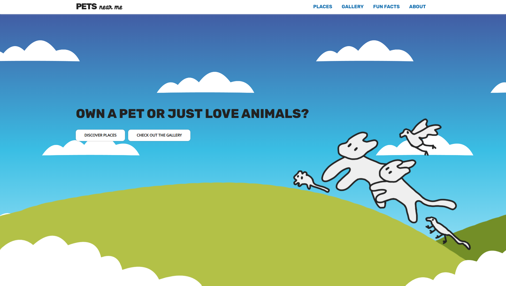
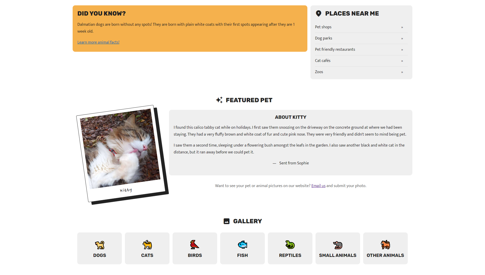
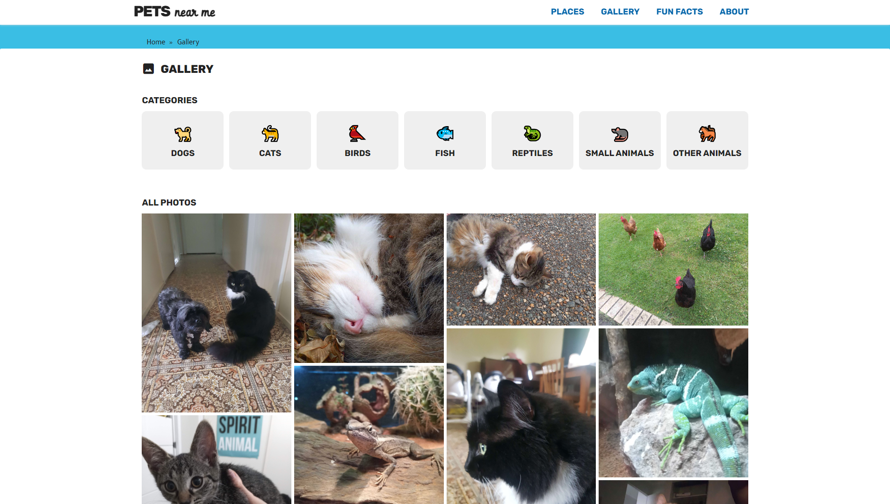
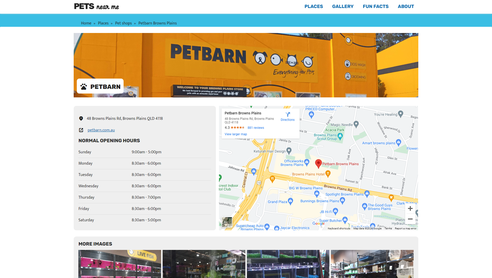

Role: Programmer and designer
Tools: HTML and CSS, screen reader, WCAG tools
Summary of Project
Pets Near Me is a responsive and accessible website that acts as a travel guide that is targeted towards children who live locally and have an interest in animals or own a pet. This website includes fun facts on animals, featured pets, an image gallery, and info pages on nearby places to visit.




Objective
My objective was to design and implement a website that was built with consideration and meet the expectations of the target audience which was children approximately 10 years old. It also needed to meet the technical constraints given by the design brief which required it to:
- Include eight unique web pages that have coherent graphical identity and aesthetic quality and contain a header, nav bar, and footer that were consistent across all pages.
- Be designed responsively to fit across mobile, tablet, and desktop resolutions.
- Meet a minimum requirement of at least WCAG Level A accessibility standards and be screen reader friendly.
My role
- Considered the target audience, their wants and needs for interacting with a website
- Created the moodboard and website wireframes for different resolutions
- Coded the website using plain HTML and CSS
- Tested website against Web Content Accessibility Guidelines to meet a minimum of A level